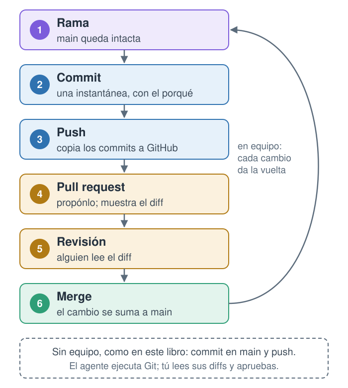
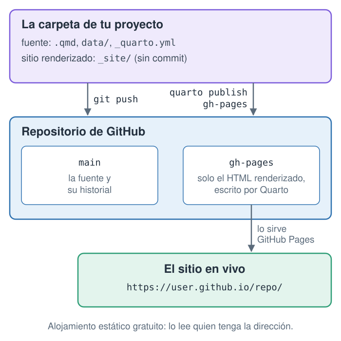
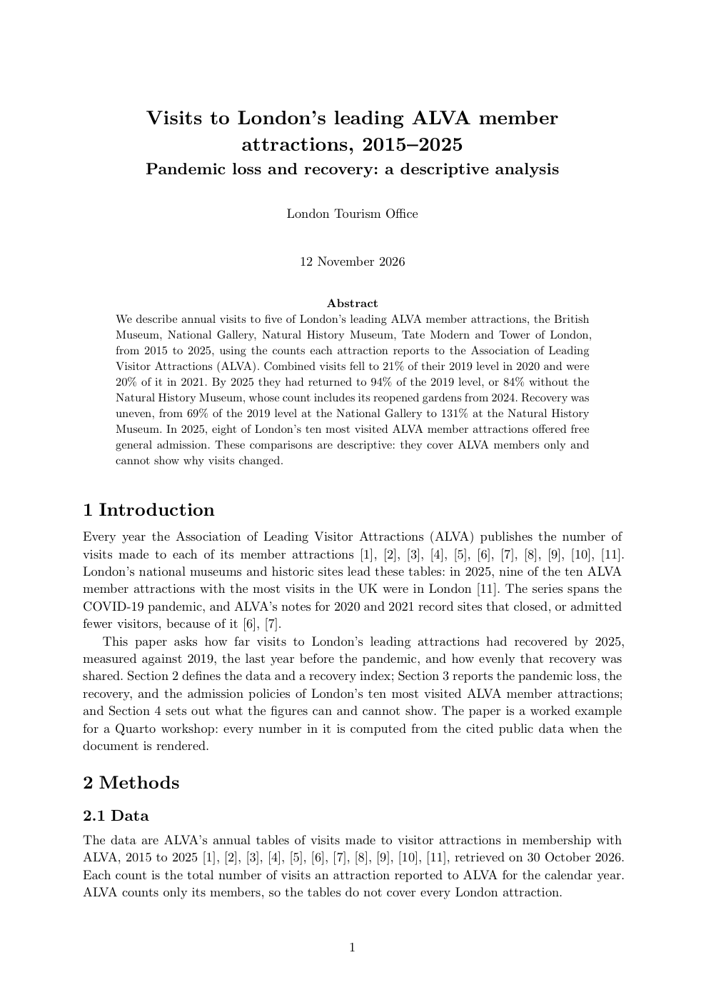

7 Publicar y demostrar la reconstrucción
Quarto, publicación reproducible, asistentes de programación, Markdown, Python, EPUB, análisis de datos, k-means
La guía está terminada y nadie más que tú puede verla: cada salida está en una carpeta de tu computadora. Este capítulo la pone en la web, donde cualquiera puede abrirla en el teléfono, con Git para guardar cada versión de la fuente y GitHub Pages para servir el resultado. Luego hace la pregunta que todo el flujo de trabajo está construido para responder: si cambia un dato de entrada, ¿qué salidas cambian con él, y cómo lo sabes? Esa pregunta no trae prompt. Pone a prueba si puedes predecir lo que hará una reconstrucción, y luego comprobarlo.
- Explicar los commits, las ramas y los pull requests, y leer un diff.
- Convertir la carpeta en un sitio web y publicarlo en GitHub Pages.
- Elegir entre servicios de alojamiento que reciben tus archivos y servicios que construyen.
- Predecir, reconstruir y explicar hasta dónde llega un dato de entrada que cambia.
7.1 Git: cada cambio, con seguridad
La Sección 1.4 comparó Git con el control de cambios de Word para una carpeta entera, con un historial que perdura. En la práctica eso significa dos cosas. Ves exactamente qué cambió, línea por línea, y otra persona puede aprobarlo antes de que cuente. Y se conserva cada versión anterior del proyecto entero, con una nota que dice por qué cambió, así que cualquiera de ellas se puede restaurar o comparar.
El vocabulario es corto (Figura 7.1; Pro Git y la documentación de GitHub, consultados el 2026-10-31). Un repositorio es una carpeta de proyecto con su historial; cada versión guardada es un commit, una instantánea de cada archivo con seguimiento, con su mensaje.

Una rama es una etiqueta móvil sobre una línea de commits, para que el trabajo pueda seguir ahí mientras la línea principal, main, sigue funcionando. Hacer push es copiar los commits al repositorio compartido en GitHub, el sitio web que guarda una copia de un repositorio en línea. Un pull request propone hacer merge de una rama y muestra la diferencia, o diff, línea por línea; una revisión lo comenta, lo aprueba o pide cambios; hacer merge agrega sus commits a main.
Si trabajas sin equipo, como en este libro, haces commit directamente en main y haces push; en un equipo, cada cambio recorre el ciclo. En los dos casos, el asistente ejecuta los comandos de Git y tú los apruebas. Pídele que “haga commit con un mensaje que diga por qué”, y lee sus diffs antes de aprobar: un diff es la comprobación más clara que tienes de lo que de verdad hizo el asistente.
El asistente informa “Committed the dashboard changes” (hice commit de los cambios del dashboard) y pide hacer push. ¿Qué revisas antes de aprobar?
El diff detrás del commit: qué archivos y líneas cambiaron, que sean los que pediste, que no haya cambiado nada en data/ ni en images/ y que el mensaje diga por qué.
7.2 Dónde vive un sitio
Un sitio web de Quarto renderizado es estático: una carpeta de HTML, CSS, JavaScript, imágenes y documentos, sin ningún programa corriendo en un servidor. Cualquier servidor web puede servirlo, así que publicar significa copiar esa carpeta a un servicio de alojamiento. GitHub Pages es el que usa este libro, porque el repositorio ya está en GitHub y quarto publish gh-pages viene incluido (Figura 7.2).

main con Git; quarto publish gh-pages renderiza el sitio en tu computadora y sube solo el HTML renderizado a una rama aparte, que GitHub sirve.
Hay dos formas de llevar un sitio a un servicio de alojamiento. O renderizas en tu propia computadora y subes el resultado, como hace quarto publish para GitHub Pages y Netlify, o el servicio construye el sitio a partir de tu repositorio en cada push. La segunda solo funciona si la construcción instala Quarto, Python y cada paquete que necesita el proyecto, o si la salida renderizada está en el repositorio. El repositorio de Londres deja afuera su carpeta renderizada _site/, así que un servicio que construye no produciría nada hasta que se configure la construcción.
Conectas london-guide a un servicio que construye desde Git, y publica un sitio vacío. ¿Por qué?
El repositorio no contiene ningún sitio renderizado, porque .gitignore deja afuera _site/, y la construcción del servicio no tiene Quarto, Python ni paquetes salvo que los instales en ella. O renderizas en tu computadora y subes el resultado, o configuras la construcción.
Seis servicios con planes gratuitos para sitios estáticos, consultados en sus páginas oficiales el 2026-11-07, muestran las dos rutas (Tabla 7.1, Tabla 7.2). Los planes gratuitos cambian: lee los límites vigentes antes de elegir.
| Servicio | Subir con | Plan gratuito |
|---|---|---|
| GitHub Pages | quarto publish gh-pages |
la ruta de este libro |
| Netlify | quarto publish netlify |
300 créditos al mes, 15 por despliegue |
| Cloudflare | wrangler deploy |
Pages: 500 construcciones al mes, 20,000 archivos |
| Servicio | Plan gratuito |
|---|---|
| Vercel | solo uso personal, no comercial |
| GitLab Pages | publica una carpeta public |
| Render | reconstruye en cada push |
Dos detalles importan para este proyecto. El plugin de construcción de Quarto para Netlify no ejecuta Python, así que renderiza en tu computadora y sube el resultado. GitLab construye en un trabajo de CI, una construcción que ejecuta en cada push: fija output-dir: public e instala Quarto y Python en el trabajo. Quarto Pub, el servicio gratuito propio de Quarto, está siendo reemplazado por Posit Connect Cloud.
7.3 Una carpeta, un sitio web
Convierte esta carpeta en un sitio web de Quarto: _quarto.yml (renderiza solo los archivos .qmd; barra de navegación, en inglés: Guide, Dashboard y un menú Downloads con los archivos docx, pdf, pptx, epub y london-slides.html que existan), index.qmd, y un .gitignore para /_site/, /.quarto/, /.venv/ y *_files/. Renderiza y revisa los enlaces.escribe 3 archivos · uv run quarto render → _site/
luego, en la pestaña de la vista previa: Ctrl+C, y uv run quarto preview
Un archivo _quarto.yml en la parte de arriba de la carpeta la convierte en un proyecto. quarto render sin nombre de archivo construye entonces cada página de la lista en _site/, con navegación compartida, y quarto preview sin nombre de archivo muestra la vista previa del sitio entero. El dashboard se vuelve una de sus páginas:
- 1
-
Una lista
renderexplícita evita que el README, las notas de los datos y los créditos de las fotos se vuelvan páginas del sitio. - 2
- El menú enlaza los archivos que escribieron los otros formatos: la guía en Word, el PDF, el folleto y los archivos opcionales que hayas hecho.
.gitignore enumera lo que Git no debe seguir: la carpeta renderizada _site/ (que se reconstruye desde la fuente y se publica aparte), la carpeta de trabajo de Quarto, .quarto/, el entorno .venv/ (que se reconstruye desde uv.lock) y las carpetas *_files/ de las figuras. index.qmd se convierte en la página de inicio del sitio, index.html, la que ve quien visita la dirección del sitio.
7.4 Publicar
Antes de pegar el prompt siguiente, reemplaza <your-github-username> por tu nombre de usuario de GitHub (el asistente puede averiguarlo con gh api user si se lo pides).
Inicializa un repositorio de git aquí. Reemplaza el README.md de esta carpeta por uno corto, en inglés, que enlace a https://<your-github-username>.github.io/london-guide/ y enumere los archivos del menú Downloads del sitio. Haz commit de todo menos _site/, .quarto/, .venv/ y *_files/, luego crea con gh un repositorio público de GitHub llamado `london-guide` y haz push. Fija el sitio web del repositorio en la misma URL con `gh repo edit --homepage`. Muéstrame el README y la URL que configuraste.git init · git commit · gh repo create london-guide … · gh repo edit --homepage …
apruebas gh · en la pestaña de la vista previa: Ctrl+C, luego uv run quarto publish gh-pages y Enter · abres la dirección en tu teléfono
El asistente crea el repositorio en GitHub a partir de tu carpeta con gh repo create london-guide --public --source=. --push, que también sube los commits, usando la sesión iniciada en la comprobación de la preparación. Su README es lo primero que ven quienes visitan el repositorio, y su enlace los lleva al sitio en vivo.
La primera publicación es tuya, escrita en la terminal. Detén antes la vista previa: la publicación renderiza el sitio entero, y dos renderizados en una carpeta chocan. Hace una sola pregunta, “Publish site … (Y/n)”, que Enter responde que sí; luego renderiza el sitio, crea la rama gh-pages, sube el sitio renderizado y lo abre. La guía de GitHub Pages de Quarto dice que ejecutes quarto publish gh-pages en tu computadora, una vez, antes de configurar una GitHub Action para publicar (consultada el 2026-11-12). Haz también interactiva esa primera ejecución: en una prueba con Quarto 1.6.40, --no-prompt detuvo la primera publicación con “the remote origin does not have a branch named gh-pages” (el remoto origin no tiene una rama llamada gh-pages). Eso se observó con 1.6.40 y no se volvió a probar con 1.10.20. Una vez que existe la rama, el asistente puede actualizar el sitio con uv run quarto publish gh-pages --no-prompt.
En esa prueba, la primera publicación de cada sitio tardó entre un minuto y medio y dos minutos, y luego GitHub Pages lo construyó en 20 a 35 segundos, así que una página 404 en el primer minuto suele significar que el sitio todavía se está desplegando.
Un push que falla con HTTP 400 (“RPC failed”, “the remote end hung up unexpectedly”) se vio con sitios más grandes, como dashboards con mapas incrustados. Aumenta el búfer de Git para este repositorio con git config http.postBuffer 524288000 y vuelve a hacer push.
Publicar desde tu propia computadora es simple y mantiene la construcción donde está tu entorno. La alternativa, una GitHub Action que renderiza en cada push (quarto-dev/quarto-actions, de Quarto), necesita Python y los paquetes del proyecto instalados en el trabajo, o freeze configurado para que se reutilicen los resultados guardados en el repositorio, y la guía de Quarto igual pide un primer quarto publish gh-pages en tu computadora.
7.5 Cambia un dato de entrada, explica la reconstrucción
El Capítulo 1 empezó con una corrección (Sección 1.1): ALVA revisa una cifra y, en un flujo de copiar y pegar, alguien tiene que llevarla a mano a cada archivo que la cita. Aquí está ese escenario de verdad, en un proyecto en el que nunca se copió ningún conteo de visitantes. No viene ningún prompt: escribe el tuyo, o hazlo a mano. Haz tú la edición de los datos, por ejemplo con nano data/attractions.csv (Ctrl+O, Enter, Ctrl+X): las reglas del proyecto mantienen al asistente fuera de data/, que es justamente su propósito.
El valor es ficticio: elegido para que cambie la atracción más visitada, de modo que el efecto se vea, y reversible, porque el paso de publicación hizo commit del archivo real. git restore devuelve un archivo a como estaba en el último commit, y la segunda reconstrucción no deja ningún número de prueba en tus archivos.
Revisa tu predicción
Para revisarla, necesitas saber qué página lee qué dato de entrada. La Tabla 7.3 se calcula a partir de las fuentes del proyecto terminado, páginas opcionales incluidas: una página cuenta como lectora de un archivo solo si su código lo carga.
.qmd) lee qué archivo de data/, y los formatos que escribe. Calculado a partir de las fuentes: una marca significa que el código de la página carga el archivo.
| Página | Escribe | attractions | visits | churches | sights |
|---|---|---|---|---|---|
| london | html, docx, pdf, pptx, epub, diapositivas | ● | |||
| london-dashboard | html | ● | ● | ● | |
| london-email | docx | ● | |||
| london-flyer | |||||
| london-social | ● | ||||
| london-whitepaper | ● | ● |
En total, cinco páginas cargan attractions.csv, y entre todas escriben diez archivos, así que el cambio llega a todos ellos en el siguiente renderizado.
Lo que hace ahí depende del código de cada página. De esas páginas, tres (la guía, el dashboard y el informe para socios) encuentran la atracción más visitada con attractions["visits_2025"].idxmax() y el total con .sum(), así que en cada una la Tower of London pasa a ser la atracción más visitada y el total sube. El anuncio cuadrado usa solo la primera llamada, así que también nombra a la Tower.
El documento técnico no nombra ninguna atracción más visitada: sus sumas por tipo de entrada cambian, pero su tabla conserva la columna rank_uk de ALVA tomada del archivo, que seguiría ubicando a la Tower en el noveno puesto del Reino Unido al lado de la mayor cantidad de visitas de las diez. Una columna copiada también queda vieja. Aun así, eso responde la pregunta con la que empezó el Capítulo 1: la corrección llega a diez archivos con un solo comando, y nadie tiene que salir a buscarlos.
Las copias merecen una segunda mirada. El folleto no carga ningún dato, y las tablas de atracciones de la guía y del informe para socios están escritas a mano, aunque los créditos de la guía nombran sights.csv: las tres copian sus datos (rangos de precio, estaciones más cercanas) del archivo citado al Markdown. Fue una decisión razonable, porque esos datos cambian poco, pero significa que una corrección en sights.csv no actualiza ninguna de ellas. Una copia citada sigue siendo una copia.
¿Por qué se vuelve a calcular cada página, incluso las que no cambiaron su fuente? Porque el proyecto conserva el comportamiento por defecto de Quarto, freeze: false: cada renderizado vuelve a ejecutar el código de cada página, lo que mantiene simple la respuesta de este ejercicio. Con el caché activado, una página cuya fuente no cambió conservaría sus números viejos, y la respuesta dependería del caché; el Capítulo 14 vuelve sobre esa disyuntiva.
Hay dos cosas más que no cambian: el sitio en vivo, hasta que vuelvas a publicar (uv run quarto publish gh-pages --no-prompt), y cualquier salida que no reconstruiste. Las respuestas modelo, con las preguntas de seguimiento que vale la pena hacerse, están en el Apéndice E.
7.6 Un documento técnico (opcional)
Los mismos datos también se pueden convertir en un artículo académico: un resumen, secciones numeradas, resultados calculados y una lista de referencias, con la tipografía que usan los documentos de LaTeX, sin instalar LaTeX.
Crea london-whitepaper.qmd, un documento técnico A4 de Typst en inglés, con la tipografía "New Computer Modern": un resumen (sin código en línea), Introduction, Methods, Results y Conclusions numeradas, y luego References mediante `#set bibliography(title: [References])` (references.bib a partir de `url`). Analiza data/visits.csv frente a 2019 y data/attractions.csv según `admission`. Agrégalo a `render` y al menú "Downloads"; renderiza; revisa las citas. Las figuras tienen que ser vectoriales: fija `fig-format: svg` y comprueba que los archivos de `figure-typst/` terminen en .svg.- 1
- Typst 0.15, que viene con Quarto 1.10.20, incluye New Computer Modern, la versión OpenType de la Computer Modern de LaTeX, así que el documento parece un artículo de LaTeX sin una instalación de TeX.
- 2
- Numera los títulos: 1, 1.1, 2.
- 3
-
El estilo de referencias numeradas de Typst;
[@key]en el texto cita una entrada dereferences.bib. - 4
- Las figuras vectoriales se ven nítidas con cualquier zoom; la comprobación del prompt se asegura de que de verdad sean vectoriales.

examples/london/london-whitepaper.qmd.
Tres trampas, todas encontradas al construir el ejemplo. La configuración del documento necesita Quarto 1.10 o más reciente: el Typst de Quarto 1.6.40 la rechaza con “unexpected argument: spacing”. Una expresión en línea en un abstract del YAML se ejecuta antes de la celda de preparación y falla, así que el ejemplo terminado escribe su resumen en el cuerpo, en un bloque de Typst sin procesar. Y Typst imprime su propio título encima de la lista de referencias, “Bibliography” por defecto, que el prompt cambia con #set bibliography(title: [References]) para que el documento no necesite un título References propio.
También hay disponible un PDF de LaTeX auténtico, como format: pdf, pero necesita una distribución de TeX, por ejemplo quarto install tinytex. Para la mayoría de los informes, Typst es más rápido y más simple.
Resumen
- Git guarda cada versión como commits; un diff muestra lo que hizo el asistente.
- Un sitio construido son archivos estáticos: súbelos, o deja que un servicio los construya.
- Un
_quarto.ymlcon una listarenderconvierte una carpeta en un sitio web. - El primer
quarto publish gh-pageses tuyo; las actualizaciones siguientes pueden ser del asistente. - Un dato de entrada que cambia llega a cada página cuyo código lo carga; las copias y el sitio en vivo, no.
Con eso se completa una guía para muchos públicos. En la Parte III, lo difícil es el análisis mismo: agrupar las zonas municipales de Colombia en tipos según la calidad del agua, los servicios y el contexto. Ese único análisis se publica luego como informe, diapositivas, entrada de blog y sitio web, todos leyendo los resultados de un solo script, y su prueba de reconstrucción cambia una opción del análisis en lugar de un número de una tabla.
Lecturas adicionales
- Scott Chacon y Ben Straub, Pro Git, Branches in a nutshell; GitHub, About pull requests (consultados el 2026-10-31).
- Quarto, Websites, Publishing, GitHub Pages y other services (consultados el 2026-11-01 y el 2026-11-07).
- GitHub CLI,
gh repo create(consultado el 2026-11-01). - Quarto, Citations y Typst options (consultados el 2026-11-01).